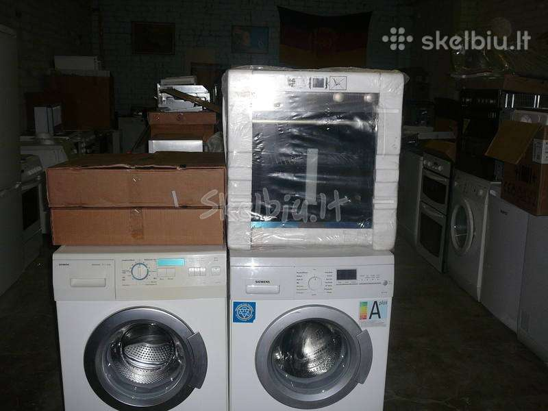

Buitinė technika Internetu pigiau Žema kaina | b-a.eu
Kalba (language)
Pristatymas (shipping to)
Belarus Germany Denmark Estonia Spain France United Kingdom Ireland Italy Lietuva Latvia Norway Poland Russia Sweden Ukraine KuponaiPrekių katalogas
Baldai ir interjeras Statybinės medžiagos Buitinė technika Namai ir buitis Elektronika namams Metalai Įranga ir įrenginiai Santechnika Prekės vaikams Elektros prekės Laisvalaikio ir sporto prekės Prekės civiliams, kariams, medžiotojams Zoo prekės gyvūnams Medicina, sveikata Sodo daržo prekės Sekso prekės Kvepalai ir kosmetika Apranga, avalynė ir aksesuarai Dovanos, suvenyrai, pramogos Auto-Moto Išmanūs namai Žiūrėti visą prekių katalogą Prisijunkitearba registruokitės Apie b-a.eu Kontaktai D.U.K Kaip pirkti
EUR /
/
Pristatymas: Lietuva
Kalba (language) Lietuvių Latviešu English Pусский Pristatymas (shipping to) Belarus Germany Denmark Estonia Spain France United Kingdom Ireland Italy Lietuva Latvia Norway Poland Russia Sweden Ukraine Prekių krepšelis: 0 Parfumerija Moterims Kvepalai moterims Chanel Christian Dior Versace Hugo Boss Guerlain Lacoste Lancome Gucci Escada Giorgio Armani Serge Lutens Lanvin Moschino Chloe Lady Gaga Mexx Revlon Kenzo Calvin Klein Kosmetikos rinkiniai Kosmetika veidui Makiažo pagrindas Veido pudra Skaistalai Maskuojamos priemonės Kosmetika akims Tušai Šešėliai Akių pieštukai ir kontūrai Kosmetika lūpoms Lūpų dažai Blizgesiai Pieštukai lūpoms Kosmetika nagams Negyvosios jūros produktai Vyrams Kvepalai vyrams Chanel Christian Dior Versace Hugo Boss Lacoste Lancome Gucci Giorgio Armani Lanvin Moschino Mexx Kenzo Calvin Klein Visi kvepalai vyrams Skutimosi priemonės Losjonai, balzamai Skutimosi želė Skutimosi putos Higienos priemonės Šampūnai Dušo želė Dezodorantai/antiperspirantai Burnos higiena Muilas Kojų priežiūrai Naujas Kremai nuo saulės Dekoratyvinė kosmetika Kosmetikos rinkiniai Makeup Trading Elizabeth Arden Estee Lauder Clinique Visi rinkiniai Akių šešėliai Christian Dior Artdeco Dermacol Rimmel London Visi šešėliai akims Akių pieštukai ir kontūrai Lancome Christian Dior Rimmel London Visi akių pieštukai Akių tušai Chanel Lancome Christian Dior L´Oreal Paris Clinique Maybelline Rimmel London Visi akių tušai Makiažo pagrindas Revlon Lancome BOURJOIS Paris Christian Dior Visi makiažo pagrindai Veido pudra Clinique Lancome Visos pudros Skaistalai veidui Rimmel London Dermacol Lūpų dažai Christian Dior Max Factor Visi lūpų dažai Lūpų pieštukai Lūpų blizgesiai Dolce & Gabbana Lancome Visi blizgesiai lūpoms Maskuojamosios priemonės veidui Kosmetika nagams Dermacol Sally Hansen Priežiūra ir higiena Veido priežiūra Kremai veidui Kaukės ir serumai Paakių priežiūra Veido valikliai Asmens higiena Dezodorantai ir antiperspirantai Naujas Depiliacija Burnos higiena Intymi higiena Muilas Vonios druskos, aliejai Plaukų priežiūra Šampūnai Plaukų stiprikliai Plaukų modeliavimui Plaukų kaukės Kondicionieriai ir balzamai Plaukų dažai Viso kūno priežiūra Kūno kremai, losjonai Kūną stangrinančios priemonės Kojų priežiūra Rankų priežiūra Kūno šveitikliai Kremai ir losijonai nuo saulės nudegimų, netolygau įdegio Aromatiniai eteriniai aliejai Negyvosios jūros produktai Negyvoji jūra kūnui Kūno losjonai, kremai, sviestai Dušo želė, šveitikliai Papildomos, spec. priemonės Negyvoji jūra plaukams Plaukų balzamai, kaukės Negyvosios jūros šampūnai Negyvoji jūra veidui Paakių zonai Veido kremai, kaukės Veido valymui Papildomos negyvosios jūros priemonės Baldai Svetainės baldai Sekcijos Sofos, sofos-lovos Minkšti kampai Foteliai ir pufai Svetainės komodos Svetainės staliukai TV staliukai Lentynos Miegamojo baldai Miegamojo lovos Čiužiniai Miegamojo spintos Miegamojo baldų kolekcijos Virtuvės baldai Virtuviniai komplektai Virtuvinės spintelės Virtuviniai stalai Virtuviniai stalviršiai Virtuvės baldų priedai Vonios baldai Vonios baldų kolekcijos Vonios spintelės Sisteminiai baldai Šiuolaikiniai sisteminiai baldai Klasikiniai sisteminiai baldai Jaunuolio baldai Jaunuolio baldų kolekcijos Jaunuolio baldų komplektai Jaunuolio kėdės Valgomojo baldai Valgomojo stalai Valgomojo kėdės Prieškambario baldai Prieškambario kolekcijos Prieškambario komplektai Prieškambario spintos Batų dėžės Kabyklos Dekoratyviniai aksesuarai Paveikslai Baldai vaikams Vaikiškos lovos Spintos vaikams Stalai vaikams Kėdės vaikams Lentynos vaikams Kabyklos vaikams Lauko baldai Lauko stalai Lauko kėdės Įvairūs lauko baldai Lauko baldų komplektai Medžio masyvo baldai Mediniai virtuvės baldai Mediniai miegamojo baldai Mediniai valgomojo baldai Mediniai prieškambario baldai Mediniai staliukai Kiti mediniai baldai Biuro baldai Biuro baldų kolekcijos Biuro kėdės Baro ir restorano baldai Baro, restorano stalai Baro, restorano kėdės Statyboms Statybiniai blokeliai ir plytos Akyto betono blokeliai Silikatiniai blokeliai Silikatinės plytos Keramzitiniai blokeliai Keraminiai blokeliai Keraminės plytos Klinkerinės plytos Betono blokeliai Pamatiniai blokeliai Statybinės sąramos Stogų ir sienų dangos Beasbestinis šiferis Bituminės čerpelės Bituminiai lakštai PVC lakštai Prilydomos dangos Betoninės čerpės Keraminės čerpės Profiluota skarda Cedral apkala Sandwich plokštės Komplektavimo detalės Statybiniai mišiniai Cementas Mūro mišiniai Statybiniai klijai Gipsas Glaistas Išlyginamieji mišiniai Tinko mišiniai Cheminiai priedai Šilumos izoliacija Akmens vata Stiklo mineralinė vata Putų polistirenas Ekonominis polistirolas Termoizoliacinės plokštės Šilumos izoliacinis tinkas Kita šilumos izoliacija Statybinės plokštės Gipso kartonas (GKP) Orientuotų skiedrų plokštės (OSB) Fanera Cemento drožlių plokštės (CDP) Medžio drožlių plokštės (MDP) Medžio plaušo plokštės (MPP) Tvoros Tvorų segmentai Stulpai tvoroms Vartai Tvorų aksesuarai Tinklai tvoroms Skaldytų blokelių tvoros Betoninės tvoros Skardinės tvoros Kaminų sistemos Schiedel kaminai Fibo kaminai Kerapor kaminai Aplinkos tvarkymo elementai Grindinio trinkelės Klinkerio trinkelės Šaligatvio plytelės Kelio ir vejos bordiūrai Šulinių žiedai Dekoratyviniai gaminiai Apdailos medžiagos Apdailos plytelės Grindų apdailos medžiagos Sienų apdailos medžiagos Lubų apdailos medžiagos Apdailos sujungimo profiliai Dažai ir glaistai Emulsiniai dažai Lakai Akriliniai dažai Aliejiniai dažai Grindų dažai Emaliniai dažai Aerozoliniai dažai Dažymo įrankiai Gruntai Glaistai Rūdžių surišėjai, modifikatoriai Medžio tvirtinimo elementai Vinys Medsraigčiai, smeigės Kabliai (pusiaukilpiniai, įsukami) ir kilpos Sraigtai Din 7981, cinkuoti Sraigtai Din 571, cinkuoti Metalo tvirtinimo elementai Varžtai Veržlės Poveržlės Sraigtai Kniedės Vielokaiščiai Skiedikliai ir valikliai Acetonas Nefrazas Nitroskiedikliai Terpentinas Vaitspiritas Žibalas Skiedinio dėmių valikliai Specialios paskirties valikliai Tinklai, lynai, vielos, grandinės Statybiniai tinklai Vieliniai lynai, vielos Grandinės Plieninių lynų ir grandinių tvirtinimo elementai Tvirtinimo elementai Metalo profiliai Kaiščiai GKP tvirtinimo elementai Šilumos izoliacinių medžiagų tvirtinimo elementai Stogų, sienų tvirtinimo elementai Langai, durys, palangės, laiptai Stoglangiai Vidaus ir lauko durys Laiptai Durų stogeliai Palangės Plėvelės stogams ir sienoms Antikondensacinė plėvelė Difuzinė plėvelė Garo izoliacinė plėvelė Priešvėjinė plėvelė Apsauginės medžiagos Statybinė mediena Hidroizoliacija, hermetikai, impregnantai Poliuretaninės putos Pistoletai hermetikams Putų pistoletų valikliai Hidroizoliacinės medžiagos Impregnantai Silikoniniai hermetikai Akriliniai hermetikai Ugniai atsparūs hermetikai Bituminis siūlių užpilas Vandens suvedimo sistemos Lietvamzdžiai ir latakai Paviršinio vandens surinkimas Sodui, daržui Sėklos Daržovių, vaisių Gėlių Prieskonių Šiltnamiai Sodo įrankiai Grąžtai Grėbliai Įrankiai miškui Įrankiai vaikams Karučiai Kastuvai Kirviai Peiliai Pjūklai Šakės Sekatoriai Sodo žirklės Krūmapjovės ir trimeriai Lapų pūstuvai Mini traktoriai Moto blokai Pjūklai (benzininiai, elektriniai) Šakų, malkų smulkintuvai Ūkinės prekės Kopėčios Šluotos Kitos Žoliapjovės, vėjapjovės Fontanai Prekybinės palapinės Sniego valymo technika Sniego kastuvai Sniego stumdytuvai Sniego valytuvai Laisvalaikis Prekės sportui Prekės turizmui Vandens gaiva Prekės žvejybai Muzikos instrumentai Motociklininkui Rimtesniam modeliavimui Vaikams Namams Jai ir Jam Išpardavimai Akcijos Prekių katalogas Mano meniu Daugiau +370 655 42414 +370 699 62969 info@b-a.eu 8:00-17:00 d.d. Buitinė technika Akcijos ir Išpardavimai iš "Buitinė technika" (215) Įmontuojama buitinė technika (15) Įmontuojamos kaitlentės (2) Smulki buitinė technika (6016) Asmeninės priežiūros technika (1052) Automobiliniai šaldytuvai, šaldymo krepšiai (24) Buitinės svarstyklės (119) Dulkių siurbliai (173) Dulkių siurblių priedai (9) Kita smulki buitinė technika (86) Lyginimo technika (98) Mikrobangų ir elektrinės krosnelės (70) Oro drėkintuvai (34) Oro kondicionieriai (26) Siuvimo mašinos (56) Vandens ir oro jonizatoriai, valytuvai (12) Ventiliatoriai (67) Virtuvės technika (2790) Stambi buitinė technika (23) Garų surinktuvai Gartraukiai (1) Šaldytuvai ir šaldikliai (1) Viryklės (1)Buitinė technika internetu
Išpardavimai Visi ATPIGOSkrudintuvas GRAEF TO91EU
Kaina: 73.98 € 89.09 € ATPIGOTrintuvas Blaupunkt TBP601BL
Kaina: 51.00 € 59.76 € ATPIGOSumuštinių keptuvas ETA 4 in 1 sandwich maker ETA315190010
Kaina: 53.00 € 65.76 € ATPIGOPlaktuvas Beper BP.500
Kaina: 76.00 € 97.90 € ATPIGOPlaktuvas Beper BP.620
Kaina: 125.01 € 162.87 € ATPIGOPlaktuvas Gastroback Waring Commercial BB90EG 40110
Kaina: 329.00 € 336.82 € Akcijos Visos akcijos AKCIJA 17%Virdulys ViceVersa Tix Kettle white 75061
Kaina: 45.00 € 54.21 € AKCIJA 15%Virdulys Thomson THKE09086BL
Kaina: 67.00 € 78.81 € AKCIJA 12%Virdulys Blaupunkt EKS801BK
Kaina: 35.00 € 39.88 € AKCIJA 11%Elektrinis virdulys Gastroback Design Mini 42434
Kaina: 118.00 € 133.03 € AKCIJA 14%Elektrinis virdulys Thomson THKE917TE
Kaina: 49.99 € 58.40 € AKCIJA 24%Elektrinis virdulys Braun Kettle WK500BK Multiquick 5 Standard, 3000 W, 1.7 L, Plastic, Black, 360° rotational base
Kaina: 39.00 € 51.14 € Naujienos Visos naujienosPlaukų žnyplės ETA Kulma 4327 9000 Rosalia
Kaina: 17.12 € 17.19 €Aroma difuzorius ETA Essenco 063490000
Kaina: 25.45 €Kavos aparatas Philips EP2231/40
Kaina: 447.22 €Plaukų žnyplės REMINGTON S6606
Kaina: 65.34 € AKCIJAFondiu įrankiai Gastroback Design Raclette Fondue Advanced 42561
Kaina: 175.01 €Virtuvinis kombainas BOSCH MUM48W1
Kaina: 113.43 € Populiariausios prekės Visos populiariausios prekėsVandens jonizatorius PTV - AL (aQuator mini classic)
Kaina: 168.99 €Oro jonizatorius XJ 3500
Kaina: 169.00 €Plaukų tiesintuvas BAByliss PRO BAB3000EPE
Kaina: 114.90 €Cukraus vatos gaminimo aparatas
Kaina: 24.72 €Barzdaskutė Philips Shaver OneBlade QP2620/20 Cordless, Charging time 8 h, Operating time 45 min, Wet use, NiMH, Number of shaver heads/blades 1, Green/Grey
Kaina: 70.18 €Vakumatorius Adler Vacuum sealer AD 4484 Black/ white, 130 W, Film Box, 1 Foil roll 20cm wide and 3m long in set; 1 Sealing chamber gasket in set
Kaina: 51.55 € Buitinė technika Buitinė technika - šiuo metu Jūs esate šioje grupėje. Buitinė technika internetu pigiau. Žema kaina bei dažnos akcijos. Virš 3200 buitinės technikos prekių. Internetinė prekyba buitine technika visoje Lietuvoje. Kaina perkant internetu šioje prekių grupėje buitinė technika tai puikus pasirinkimas kiekvienam klientui. Grupėje buitinė technika visada yra galimybė įsigyti prekes pigiau. Nepatingėkite pasiteirauti geresnės kainos ir mūsų vadybininkai esant galimybei pasiūlys Jums pigiau buitinė technika grupės prekes. Lankomiausios šioje grupėje buitinė technika prekės yra šios - plaunamas anglinis filtras- f00262/3s; swirl nukalkinimo skystis, 250 ml; automatinis išjungėjas 3 f c-20a; dulkių siurblio filtras swirl ph86/4 mp3; rinkinys 3; plokščias laidas telefonui 4 gyslų juodas; kaitlentė dietrich dtg1164x; saugos daviklio galvutė xcsz01; antgalis ponasienis 16/12 mėlynas; kepimo puodas kw713291;Pristatymas visoje Lietuvoje - Vilniuje, Kaune, Klaipėdoje, Šiauliuose, Panevėžyje, Alytuje, Marijampolėje, Mažeikiuose, Jonavoje, Utenoje, Kėdainiuose, Telšiuose, Visagine, Tauragėje, Ukmergėje, Plungėje, Kretingoje, Šilutėje, Radviliškyje, Palangoje, Gargžduose, Druskininkuose, Rokiškyje, Biržuose, Elektrėnuose, Garliavoje, Kuršėnuose, Jurbarke, Vilkaviškyje, Raseiniuose, Anykščiuose, Lentvaryje, Grigiškėse, Naujojoje Akmenėje, Prienuose, Joniškyje, Kelmėje, Varėnoje, Kaišiadoryje, Pasvalyje, Kupiškyje, Zarasuose.
Buitinę techniką labai patogu ir pigu yra pirkti internetu
Tiek kraustantis į naują vietą, tiek ir atsinaujinant namus, žmonės neapsieina be naujos buitinės technikos. Technika gerokai palengvina mūsų gyvenimą, todėl nenuostabu, kad namuose galime rasti keliolika skirtingų elektrinių prietaisų, naudojamų kone kasdien. Jei buitinę techniką jums teko pirkti gana seniai, teks iš naujo pasidomėti, kuo skiriasi šiuolaikiniai prietaisai. Technologijos nestovi vietoje, todėl reikia žinoti, kuo skiriasi šiandieninės skalbimo mašinos, kavos virimo aparatai ir kita technika.
Kalbėdami apie buitinę techniką, dažniausiai įsivaizduojame virtuvę. Juk čia jos, ko gero, daugiausia. Pradedant viryklėmis ir baigiant virtuvės kombainais. O pasirinkimas taip pat nemenkas. Tikrai visų prietaisų, kuriuos galite rasti parduotuvėje, nesukišite į savo virtuvę. Todėl vieni renkasi virtuvės kombainus, kitiems užtenka ir sulčiaspaudės ar maišytuvo. Tačiau pradėkime nuo pradžių.
Daugelis virtuvės neįsivaizduoja be viryklės. Čia galima pasirinkti iš daugybės variantų. Ir kalbame ne tik apie spalvas ar modelius. Vieni renkasi dujines virykles, kiti – elektrines. Tai – pripratimo arba galimybių klausimas. O ir dujinės viryklės gali būti skirtingos. Dalis jų turi dujines orkaites, o dalis – elektrines, tačiau yra su dujinėmis kaitlentėmis. Vėlgi, renkamės pagal tai, prie ko esame pratę arba apie ką girdėjome geresnius atsiliepimus. Jei norite elektrinės viryklės, turėtumėte apsvarstyti galimybę pirkti tiesiog kaitlentę. Šios būna trijų tipų: dujinės, elektrinės ir indukcinės. Pigiausios yra dujinės, o brangiausios – indukcinės. Tačiau indukcinės kaitlentės pateisina savo kainą, nes labai greitai įšyla, yra lengvai valdomos ir valomos. Renkantis kaitlentę, svarbu atkreipti dėmesį ir į degiklių skaičių.
Be viryklių, virtuvėje galima rasti daugybę smulkios buitinės technikos. Čia žmonės renkasi, ar naudoti rankinius įrankius, ar elektrinius. Pavyzdžiui, įvairi tarkavimo technika labai palengvina virtuvės šeimininkų darbą. Tačiau kiti linkę rinktis rankinius prietaisus. Visgi, be kai kurios buitinės technikos neapsieina ir labiausiai dirbti rankomis pratusios šeimininkės. Štai kad ir kavos virimo aparatai. Kas gi nemėgsta ryto pradėti skanios kavos puodeliu? Šie aparatai gali kainuoti nuo keliolikos iki kelių tūkstančių eurų. Kiekvienas renkasi pagal tai, kiek jam yra svarbi skani kava.
Jei persikeltume iš virtuvės į kitus kambarius, pastebėtume, kad ir čia reikalinga buitinė technika. Kad ir paprasčiausias siurblys ar skalbimo mašina. Dulkių siurbliai šiandien turi įvairias valymo, plovimo funkcijas, kai kurie siurbliai yra skirti tiesiog langų valymui. Dulkių siurbliai gali būti tiek sauso, tiek drėgno valymo. Taip pat vis sparčiau į mūsų namus atkeliauja elektriniai robotai – dulkių siurbliai. Tai puikus variantas taupantiems laiką.
Vienas iš pagrindinių buitinės technikos prietaisų namuose, be kurio sunku įsivaizduoti gyvenimą, yra skalbimo mašina. Ką reikia žinoti, norint įsigyti šį prietaisą? Visų pirma, jos būna įmontuojamos ir įprastos. Įmontuojamos skalbimo mašinos yra gražiai paslepiamos spintelėse, tad jų nė nesimato. Patogu, kai neturite daug vietos, ar norite, kad interjeras atrodytų kuo paprasčiau. Skalbimo mašina yra bene svarbiausia buitinė technika namuose. Ją renkantis reikia atsižvelgti į tai, kokios galimos apsukos, būgno talpa, ar yra integruota skalbinių džiovyklė.
Skalbimo mašinos būna pakraunamos tiek iš viršaus, tiek iš priekio, tačiau tai tiesiog patogumo ir pripratimo klausimas.
Buitinės technikos gausybė gali susukti galvą. Tačiau neskubėkite pirkti visko iš karto – pamąstykite, ko jums reikia, kurie prietaisai atrodo būtini, kurie palengvintų kasdienybę. O jei abejojate ar nežinote, pasidairykite po mūsų katalogus ir tikrai rasite buitinės technikos, kuri palengvins jūsų kasdienius darbus.
Internetu buitinę techniką yra geriau, pigiau pirkti, todėl kad internetinėje parduotuvėje galima paprasčiau optimizuoti išlaidas – nereikia išlaikyti didelių sandėlių, ekspozicinės salės, didelio personalo ir kt.
Buitinę techniką labai patogu yra pirkti internetu. Dėl internetinių parduotuvių privalumų vis daugiau ir daugiau žmonių apsiperka internete nei įprastose parduotuvėse. Yra nemažai priežasčių dėl kurių internetu yra pirkti geriau nei keliaujant į parduotuves.
Viena iš tokių priežasčių būtų tai, kad internetu apsipirkti yra patogiau nei einant į parduotuves. Internetu galite apsipirkti, bet kuriuo Jums tinkančiu laiku, tai gali būti pietų ar darbo metas, ankstus rytas ar vidurnaktis, kada turite laisvo laiko. Patogu ir tai, kad nereikia laukti ir stovėti ilgų eilių, nereikia laukti Jus aptarnaujančio konsultanto ir kt. Ypač patogu apsipirkti jaunoms šeimoms auginančioms mažus vaikučius. Taip pat apsiperkant internetu nereikia rūpintis papildomu transportu, ar pagalba užnešant buitinę techniką. Perkant internetu greitai galima palyginti skirtingus buitinės technikos modelius.
Kitas nemažiau svarbus dalykas, tai kad geresnės kainos. Pigūs pasiūlymai ir mažesnės kainos, nes produktai gaunami tiesiogiai iš gamintojo arba pardavėjo, be jokių tarpininkų. Taip pat nemažai internetinių parduotuvių siūlo įsigyti nuolaidas ir kuponus. Tačiau gali tekti susimokėti už prekių pristatymą, jeigu perkate iš parduotuvės, kuri yra ne tame pačiame mieste, kaip kad Jūs gyvenate.
Taip pat ne mažiau svarbi priežastis pirkti internetu yra tai, kad yra didesnis prekių pasirinkimas. Nereikia gaišti laiko važiuojant ar einant iš vienos parduotuvės į kitą. Dauguma internetinių parduotuvių priima užsakymus ir, kai prekė atsiranda sandėlyje, Jums apie tai pranešama.
Taip pat perkant internetu galima išvengti žmonių minių. Žmonių minios daugiausiai susidaro po darbo valandų, prieš šventes, renginius, skelbiamas akcijų dienas, taigi norint tokiu laiku ir pačiam apsipirkti gali greitai pasibaigti kantrybė, nes visi nori būti pirmi, nuo žmonių kiekio darosi karšta, sklinda nemalonus kvapas, dar atvažiavus nesi garantuotas, kad gausi pasistatyti mašiną stovėjimo aikštelėse. Tai pat minios verčia mus daryti skubotus sprendimus ir apsipirkti kuo greičiau ilgai nemąstant.
Taigi norint sutaupyti laiką, pinigus, išsirinkti pačią geriausią buitinę techniką – pirk internetu ir nesigailėsi.
Apie mus D.U.K Garantijos ir grąžinimas Prekių pristatymas Kontaktai Partneriai Reklama Prekių istorija Sales and Export © 2010-2020 b-a.eu. Visos teisės saugomos.
Erikab-a.eu konsultantė Sveiki, turite klausimų?
Mes Jums padėsime!
Parašykite man el. paštu: info@b-a.eu × Erika
b-a.eu konsultantė Sveiki, turite klausimų?
Mes Jums padėsime!
Parašykite man laišką el. paštu: info@b-a.eu Uždaryti